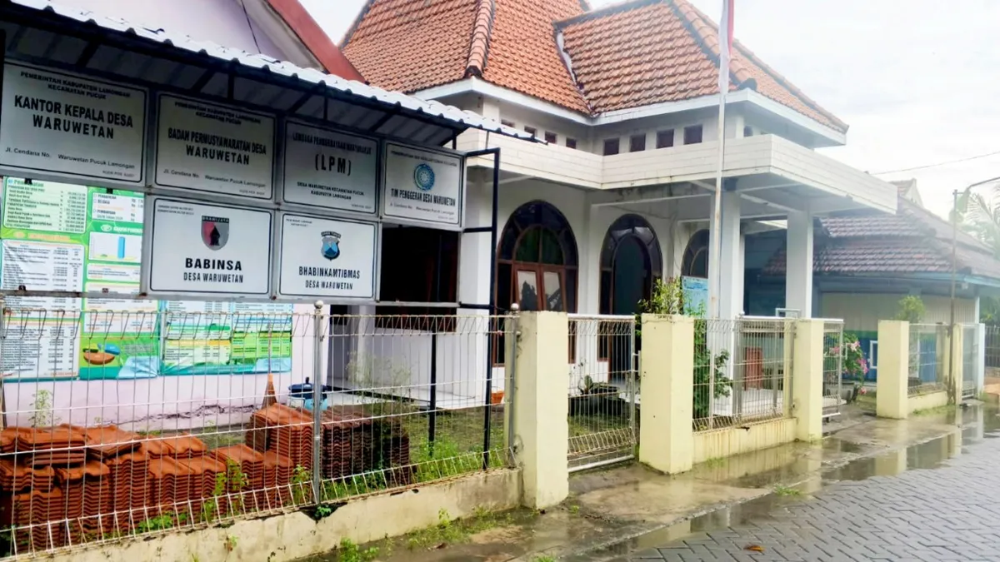
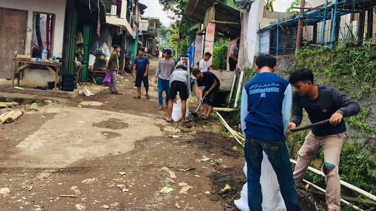
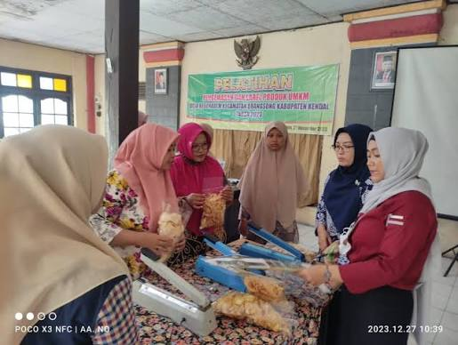
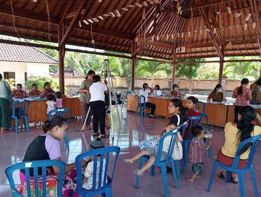

Portal informasi resmi Desa Waruwetan yang menyajikan informasi pemerintahan, berita, potensi desa, serta pelayanan kepada masyarakat.
Profil Desa Hubungi KamiMengenal lebih dekat Desa Waruwetan

Desa Waruwetan merupakan salah satu desa yang memiliki potensi di bidang pertanian, UMKM, dan sumber daya manusia. Pemerintah desa berkomitmen memberikan pelayanan yang cepat, transparan, dan profesional kepada masyarakat.
Website ini menjadi media informasi resmi desa untuk menyampaikan berita, kegiatan, pelayanan administrasi, serta berbagai informasi penting lainnya.
Baca SelengkapnyaInformasi singkat mengenai Desa Waruwetan
Jumlah Penduduk
Kepala Keluarga
Luas Wilayah
RT / RW
Arah dan tujuan pembangunan Desa Waruwetan
"Terwujudnya Desa Waruwetan yang maju, mandiri, sejahtera, berdaya saing, dan berlandaskan nilai-nilai gotong royong."
Informasi dan kegiatan terbaru Desa Waruwetan

Pemerintah Desa bersama masyarakat melaksanakan kerja bakti untuk menjaga kebersihan lingkungan.

Pelatihan diberikan kepada pelaku UMKM untuk meningkatkan kualitas produk dan pemasaran digital.

Kegiatan Posyandu dilaksanakan secara rutin sebagai upaya meningkatkan kesehatan masyarakat.
Informasi Balai Desa Waruwetan
Jl. Raya Waruwetan, Kecamatan Pucuk, Kabupaten Lamongan, Jawa Timur
(0322) 123456
desawaruwetan@email.com
Senin - Jumat
08.00 - 15.00 WIB